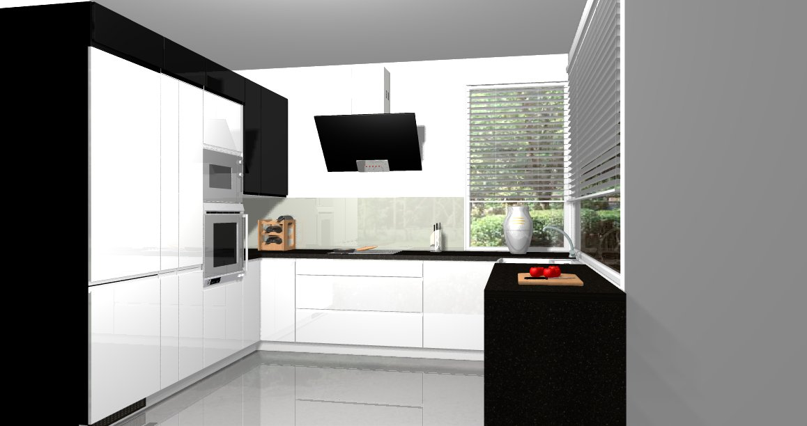
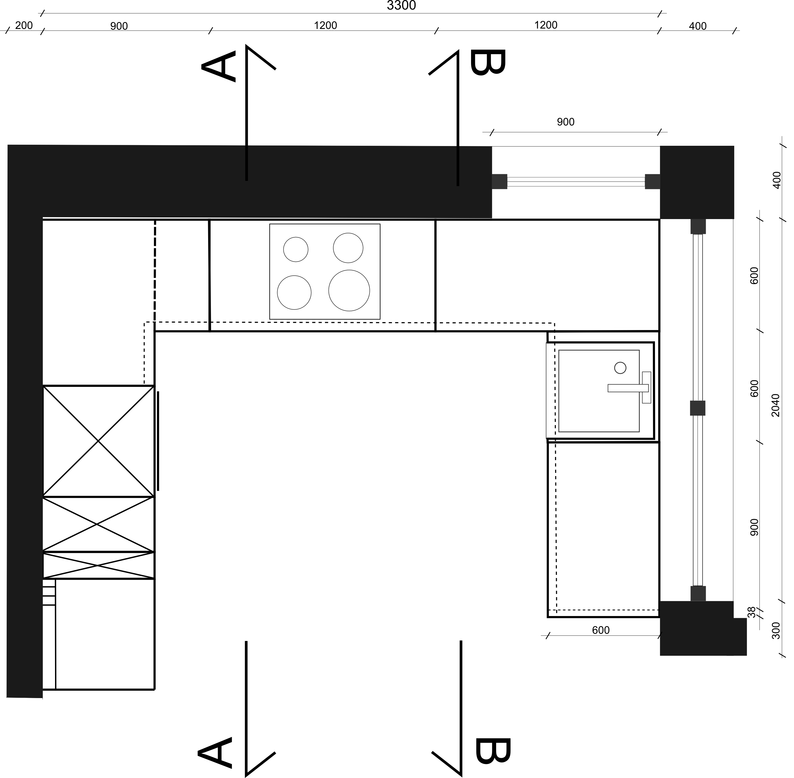
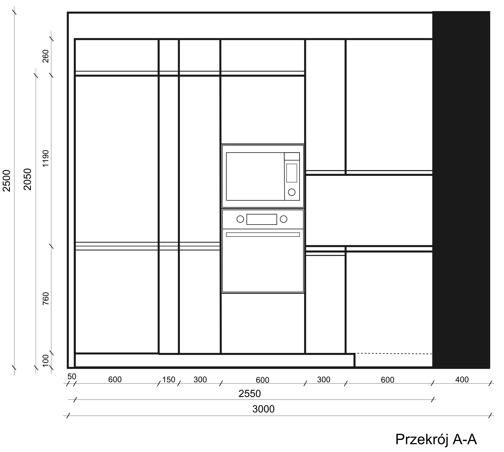
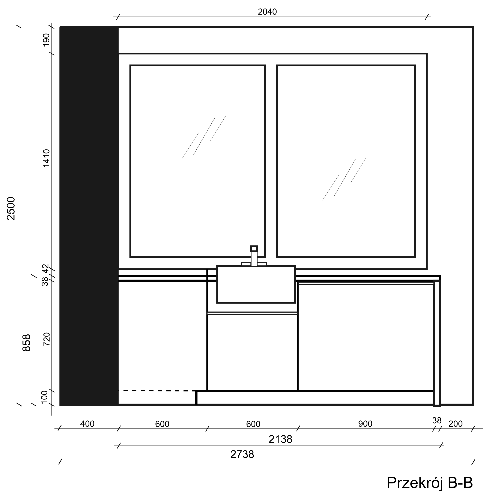
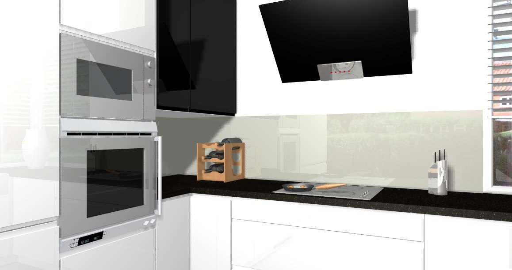
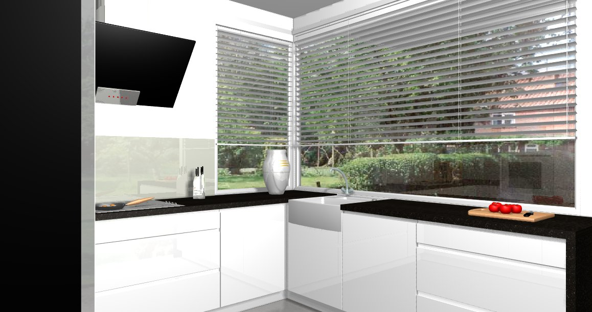

Projekt zawiera opracowanie wnętrza kuchni 8,5m2. Zabudowa kuchni w kształcie litery "U" zaprojektowana została z użyciem mebli modułowych i mebli na wymiar. Wysokość całej zabudowy kuchennej to 2310mm. Blaty robocze osadzone są na wysokości 858mm, co oznacza, że przeznaczone są dla użytkowników o średnim wzroście.
Korpusy szafek kuchennych wykonane z płyty wiórowej o grubości 16mm. Fronty wykonane są z lakierowanej na wysoki połysk płyty wiórowej. Całkowita grubość frontu to 18mm. Aluminiowe uchwyty wbudowane są we fronty dodając kuchni nowoczeny wygląd. Blaty o grubości 38mm łączone są ze sobą śrubami na imbus.
  Lodówka, mikrofala, płyta indukcyjna oraz piekarnik zostały zabudowane. We wszystkich szufladach oraz zawiasach mebli zainstalowane są ciche domyki. W wysokiej zabudowie w szafkach o szerokosci 150mm i 300mm znajdują się wysuwane szafy cargo z modułowymi akcesoriami. Dodatkowymi elementami wyposażenia kuchni są również: wysuwane półki na garnki w głębokiej narożnej szafce o szerokości 1200mm, karuzela w lewej narożnej szafce oraz zestaw koszy do segregacji odpadów w szafce pod zlewem.
 